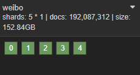
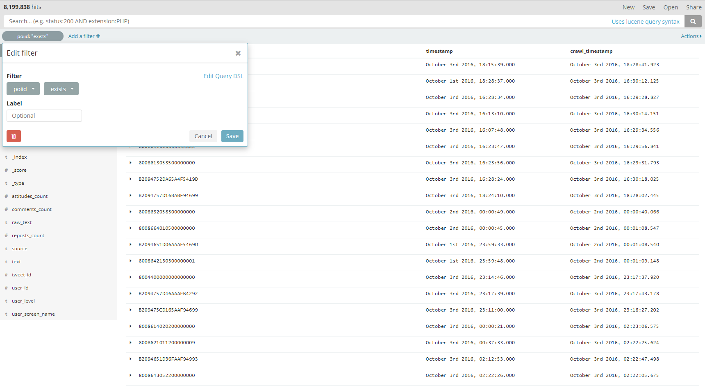
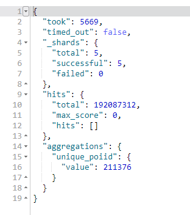
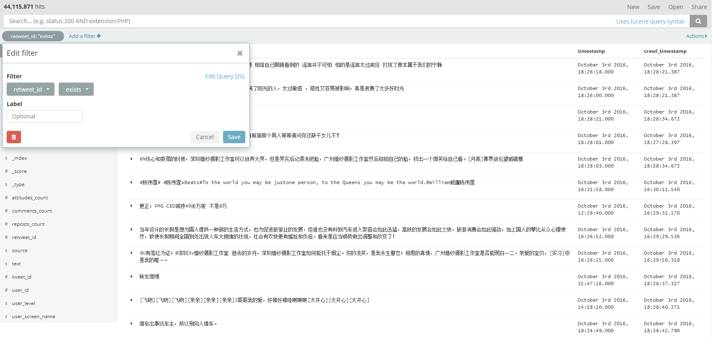
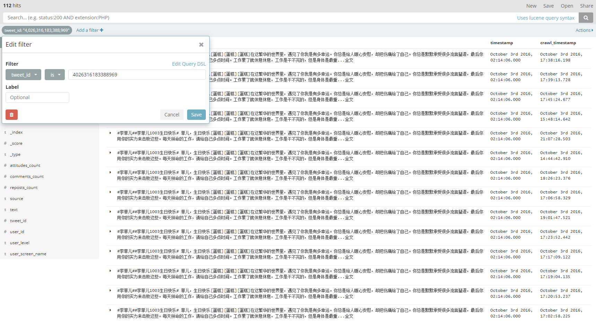
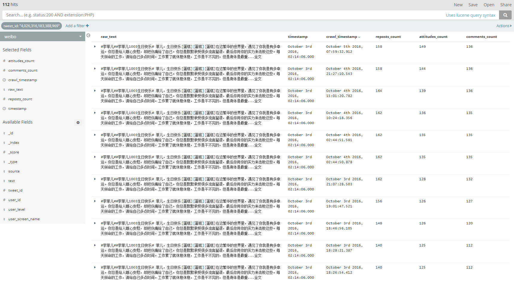
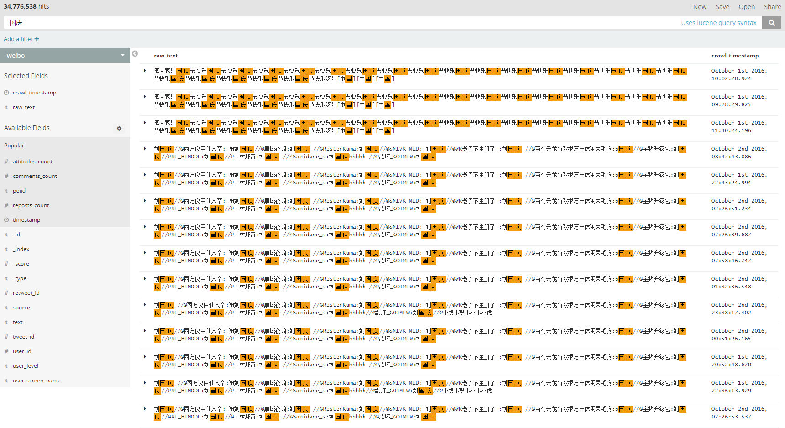

<!DOCTYPE html>
<html>
<head><meta name="generator" content="Hexo 3.9.0">
  <meta charset="utf-8">
  
<!-- Google Analytics -->
<script type="text/javascript">
(function(i,s,o,g,r,a,m){i['GoogleAnalyticsObject']=r;i[r]=i[r]||function(){
(i[r].q=i[r].q||[]).push(arguments)},i[r].l=1*new Date();a=s.createElement(o),
m=s.getElementsByTagName(o)[0];a.async=1;a.src=g;m.parentNode.insertBefore(a,m)
})(window,document,'script','//www.google-analytics.com/analytics.js','ga');

ga('create', 'UA-86850493-1', 'auto');
ga('send', 'pageview');

</script>
<!-- End Google Analytics -->


  
  <title>微博与elastic的亿级数据实践 | Geek boood&#39;s blog</title>
  <meta name="viewport" content="width=device-width, initial-scale=1, maximum-scale=1">
  <meta name="description" content="本文适用于：1、非计算机相关专业，并以微博内容为基础的科研人员或者做毕业设计的学生。2、寻求存储和处理大规模JSON数据的人员。 注意：本文旨在提供解决存储和查询相关问题的思路，仅起抛砖引玉的作用。数据为网络上公开的数据集，采用梁博分享的2016国庆微博数据，在这里感谢梁博为广大科研工作者和做毕业设计的学生提供数据。下载链接为http://pan.baidu.com/s/1cy1hyY 。总共有七">
<meta property="og:type" content="article">
<meta property="og:title" content="微博与elastic的亿级数据实践">
<meta property="og:url" content="https://geekboood.github.io/2017/09/04/微博与Elastic的亿级数据实践/index.html">
<meta property="og:site_name" content="Geek boood&#39;s blog">
<meta property="og:description" content="本文适用于：1、非计算机相关专业，并以微博内容为基础的科研人员或者做毕业设计的学生。2、寻求存储和处理大规模JSON数据的人员。 注意：本文旨在提供解决存储和查询相关问题的思路，仅起抛砖引玉的作用。数据为网络上公开的数据集，采用梁博分享的2016国庆微博数据，在这里感谢梁博为广大科研工作者和做毕业设计的学生提供数据。下载链接为http://pan.baidu.com/s/1cy1hyY 。总共有七">
<meta property="og:locale" content="default">
<meta property="og:image" content="https://geekboood.github.io/2017/09/04/微博与Elastic的亿级数据实践/1.png">
<meta property="og:image" content="https://geekboood.github.io/2017/09/04/微博与Elastic的亿级数据实践/2.png">
<meta property="og:image" content="https://geekboood.github.io/2017/09/04/微博与Elastic的亿级数据实践/3.png">
<meta property="og:image" content="https://geekboood.github.io/2017/09/04/微博与Elastic的亿级数据实践/4.png">
<meta property="og:image" content="https://geekboood.github.io/2017/09/04/微博与Elastic的亿级数据实践/5.png">
<meta property="og:image" content="https://geekboood.github.io/2017/09/04/微博与Elastic的亿级数据实践/6.png">
<meta property="og:image" content="https://geekboood.github.io/2017/09/04/微博与Elastic的亿级数据实践/7.png">
<meta property="og:updated_time" content="2019-07-31T04:07:15.162Z">
<meta name="twitter:card" content="summary">
<meta name="twitter:title" content="微博与elastic的亿级数据实践">
<meta name="twitter:description" content="本文适用于：1、非计算机相关专业，并以微博内容为基础的科研人员或者做毕业设计的学生。2、寻求存储和处理大规模JSON数据的人员。 注意：本文旨在提供解决存储和查询相关问题的思路，仅起抛砖引玉的作用。数据为网络上公开的数据集，采用梁博分享的2016国庆微博数据，在这里感谢梁博为广大科研工作者和做毕业设计的学生提供数据。下载链接为http://pan.baidu.com/s/1cy1hyY 。总共有七">
<meta name="twitter:image" content="https://geekboood.github.io/2017/09/04/微博与Elastic的亿级数据实践/1.png">
  
    <link rel="alternate" href="/atom.xml" title="Geek boood&#39;s blog" type="application/atom+xml">
  
  
    <link rel="icon" href="/favicon.png">
  
  
    <link href="//fonts.googleapis.com/css?family=Source+Code+Pro" rel="stylesheet" type="text/css">
  
  <link rel="stylesheet" href="/css/style.css">
</head>
</html>
<body>
  <div id="container">
    <div id="wrap">
      <header id="header">
  <div id="banner"></div>
  <div id="header-outer" class="outer">
    <div id="header-title" class="inner">
      <h1 id="logo-wrap">
        <a href="/" id="logo">Geek boood&#39;s blog</a>
      </h1>
      
    </div>
    <div id="header-inner" class="inner">
      <nav id="main-nav">
        <a id="main-nav-toggle" class="nav-icon"></a>
        
          <a class="main-nav-link" href="/">Home</a>
        
          <a class="main-nav-link" href="/archives">Archives</a>
        
      </nav>
      <nav id="sub-nav">
        
          <a id="nav-rss-link" class="nav-icon" href="/atom.xml" title="RSS Feed"></a>
        
        <a id="nav-search-btn" class="nav-icon" title="Search"></a>
      </nav>
      <div id="search-form-wrap">
        <form action="//google.com/search" method="get" accept-charset="UTF-8" class="search-form"><input type="search" name="q" class="search-form-input" placeholder="Search"><button type="submit" class="search-form-submit">&#xF002;</button><input type="hidden" name="sitesearch" value="https://geekboood.github.io"></form>
      </div>
    </div>
  </div>
</header>
      <div class="outer">
        <section id="main"><article id="post-微博与Elastic的亿级数据实践" class="article article-type-post" itemscope itemprop="blogPost">
  <div class="article-meta">
    <a href="/2017/09/04/微博与Elastic的亿级数据实践/" class="article-date">
  <time datetime="2017-09-03T16:00:00.000Z" itemprop="datePublished">2017-09-04</time>
</a>
    
  </div>
  <div class="article-inner">
    
    
      <header class="article-header">
        
  
    <h1 class="article-title" itemprop="name">
      微博与elastic的亿级数据实践
    </h1>
  

      </header>
    
    <div class="article-entry" itemprop="articleBody">
      
        <p>本文适用于：<br>1、非计算机相关专业，并以微博内容为基础的科研人员或者做毕业设计的学生。<br>2、寻求存储和处理大规模JSON数据的人员。</p>
<p>注意：本文旨在提供解决存储和查询相关问题的思路，仅起抛砖引玉的作用。数据为网络上公开的数据集，采用梁博分享的2016国庆微博数据，在这里感谢梁博为广大科研工作者和做毕业设计的学生提供数据。下载链接为<br><a href="http://pan.baidu.com/s/1cy1hyY" target="_blank" rel="noopener">http://pan.baidu.com/s/1cy1hyY</a> 。总共有七个文件，解压出来100G左右。</p>
<a id="more"></a>
<h2 id="MongoDB与-Elastic-的取舍"><a href="#MongoDB与-Elastic-的取舍" class="headerlink" title="MongoDB与 Elastic 的取舍"></a>MongoDB与 Elastic 的取舍</h2><p>MongoDB和Elastic都比较擅长处理JSON内容，但这MongoDB对于初学者来说不太友好，原因如下：<br>1、MongoDB并未对于多核处理器进行优化，一个实例只能运行在一个核心上。单机可以运行多个实例，但配置起来较为复杂。<br>2、MongoDB的槽点之一，吃内存。<br>3、MongoDB分布式化的过程比较复杂，Elastic分布式化设置较为简单。<br>4、Elastic配套的软件较多，Kibana比较好用。<br>5、Elastic设置索引更加细致，并且支持分词。</p>
<p>几点注意事项：<br>1、建议同时安装Kibana和kopf，配合起来可以比较方便的进行数据可视化、调试以及监控elastic状态。<br>2、你要根据自己的需求配置mapping，这个虽然导入数据后可以更改但是流程非常麻烦。<br>3、要是不在装有elastic的那台机器上导入的话，记得更改elastic<br>bind的地址。<br>4、如果你想导入所有数据的话，服务器可能需要200g的磁盘空间。</p>
<h2 id="实践环节"><a href="#实践环节" class="headerlink" title="实践环节"></a>实践环节</h2><p>首先解压文件，并用split命令按行分割，方便导入处理。这里拿第一个文件举例：</p>
<figure class="highlight plain"><table><tr><td class="gutter"><pre><span class="line">1</span><br></pre></td><td class="code"><pre><span class="line">split -l 100000 weibo_freshdata.2016-10-01</span><br></pre></td></tr></table></figure>

<p>然后设置Elastic的mapping。<br>具体的mapping设置如下：</p>
<figure class="highlight plain"><table><tr><td class="gutter"><pre><span class="line">1</span><br><span class="line">2</span><br><span class="line">3</span><br><span class="line">4</span><br><span class="line">5</span><br><span class="line">6</span><br><span class="line">7</span><br><span class="line">8</span><br><span class="line">9</span><br><span class="line">10</span><br><span class="line">11</span><br><span class="line">12</span><br><span class="line">13</span><br><span class="line">14</span><br><span class="line">15</span><br><span class="line">16</span><br><span class="line">17</span><br><span class="line">18</span><br><span class="line">19</span><br><span class="line">20</span><br><span class="line">21</span><br><span class="line">22</span><br><span class="line">23</span><br><span class="line">24</span><br><span class="line">25</span><br><span class="line">26</span><br><span class="line">27</span><br><span class="line">28</span><br><span class="line">29</span><br><span class="line">30</span><br><span class="line">31</span><br><span class="line">32</span><br><span class="line">33</span><br><span class="line">34</span><br><span class="line">35</span><br><span class="line">36</span><br><span class="line">37</span><br><span class="line">38</span><br><span class="line">39</span><br><span class="line">40</span><br><span class="line">41</span><br><span class="line">42</span><br><span class="line">43</span><br></pre></td><td class="code"><pre><span class="line">PUT weibo</span><br><span class="line">&#123;</span><br><span class="line">  &quot;settings&quot;: &#123;</span><br><span class="line">    &quot;index&quot;: &#123;</span><br><span class="line">      &quot;codec&quot;: &quot;best_compression&quot;,</span><br><span class="line">      &quot;number_of_replicas&quot;: 0</span><br><span class="line">    &#125;</span><br><span class="line">  &#125;,</span><br><span class="line">  &quot;mappings&quot;: &#123;</span><br><span class="line">    &quot;tweet&quot;: &#123;</span><br><span class="line">      &quot;properties&quot;: &#123;</span><br><span class="line">        &quot;timestamp&quot;: &#123;</span><br><span class="line">          &quot;type&quot;: &quot;date&quot;,</span><br><span class="line">          &quot;format&quot;: &quot;epoch_second&quot;</span><br><span class="line">        &#125;,</span><br><span class="line">        &quot;crawl_timestamp&quot;: &#123;</span><br><span class="line">          &quot;type&quot;: &quot;date&quot;,</span><br><span class="line">          &quot;format&quot;: &quot;epoch_millis&quot;</span><br><span class="line">        &#125;,</span><br><span class="line">        &quot;user_level&quot;: &#123;</span><br><span class="line">          &quot;type&quot;: &quot;text&quot;,</span><br><span class="line">          &quot;index&quot;: &quot;not_analyzed&quot;</span><br><span class="line">        &#125;,</span><br><span class="line">        &quot;source&quot;: &#123;</span><br><span class="line">          &quot;type&quot;: &quot;text&quot;,</span><br><span class="line">          &quot;index&quot;: &quot;not_analyzed&quot;</span><br><span class="line">        &#125;,</span><br><span class="line">        &quot;poiid&quot;: &#123;</span><br><span class="line">          &quot;type&quot;: &quot;text&quot;,</span><br><span class="line">          &quot;index&quot;: &quot;not_analyzed&quot;</span><br><span class="line">        &#125;,</span><br><span class="line">        &quot;user_screen_name&quot;: &#123;</span><br><span class="line">          &quot;type&quot;: &quot;text&quot;,</span><br><span class="line">          &quot;index&quot;: &quot;not_analyzed&quot;</span><br><span class="line">        &#125;,</span><br><span class="line">        &quot;text&quot;: &#123;</span><br><span class="line">          &quot;type&quot;: &quot;text&quot;,</span><br><span class="line">          &quot;index&quot;: false</span><br><span class="line">        &#125;</span><br><span class="line">      &#125;</span><br><span class="line">    &#125;</span><br><span class="line">  &#125;</span><br><span class="line">&#125;</span><br></pre></td></tr></table></figure>

<p>注意：Elastic中mapping的设置虽然可以进行更改，但是弄起来非常麻烦。建议先明确自己的需求，再建立索引。<br>你可以在Kibana的Dev Tools中直接粘贴上面的内容生成索引。</p>
<p>对于上面设置的解释：<br>crawl_timestamp字段是我根据梁博提供的数据推测出前几个字段的含义，也有可能是不正确的。<br>有些字段的index设置为not_analyzed，在官方文档中解释为treat as keyword<br>field。如果你需要在Kibana中生成词云的话可能需要更改相关设置。<br>对于text字段，我设置为关闭索引，只进行存储。因为这个字段中包含许多HTML标签，如果开启索引的话会占用很多空间，所以在导入的脚本中我使用BeautifulSoup过滤掉HTML，并生成raw_text字段。这个字段默认是开启全文搜索的，但是默认的全文搜索效果不太好，有相关需求的话可以装个IK分词插件。<br>在导入数据时还使用正则表达式提取微博的poiid，并记录在poiid这个字段中。（关于poiid的使用，可以自行搜索相关内容）<br>为了节省磁盘空间，我还开启了最大压缩模式。</p>
<p>导入数据的python脚本如下。将服务器地址和文件夹路径改成你自己的，然后运行代码开始导入数据。（你可能还需要安装BeautifulSoup和ElasticSearch的python插件）</p>
<figure class="highlight plain"><table><tr><td class="gutter"><pre><span class="line">1</span><br><span class="line">2</span><br><span class="line">3</span><br><span class="line">4</span><br><span class="line">5</span><br><span class="line">6</span><br><span class="line">7</span><br><span class="line">8</span><br><span class="line">9</span><br><span class="line">10</span><br><span class="line">11</span><br><span class="line">12</span><br><span class="line">13</span><br><span class="line">14</span><br><span class="line">15</span><br><span class="line">16</span><br><span class="line">17</span><br><span class="line">18</span><br><span class="line">19</span><br><span class="line">20</span><br><span class="line">21</span><br><span class="line">22</span><br><span class="line">23</span><br><span class="line">24</span><br><span class="line">25</span><br><span class="line">26</span><br><span class="line">27</span><br><span class="line">28</span><br><span class="line">29</span><br><span class="line">30</span><br><span class="line">31</span><br><span class="line">32</span><br><span class="line">33</span><br><span class="line">34</span><br><span class="line">35</span><br><span class="line">36</span><br><span class="line">37</span><br><span class="line">38</span><br><span class="line">39</span><br><span class="line">40</span><br><span class="line">41</span><br><span class="line">42</span><br><span class="line">43</span><br><span class="line">44</span><br><span class="line">45</span><br><span class="line">46</span><br><span class="line">47</span><br><span class="line">48</span><br><span class="line">49</span><br><span class="line">50</span><br><span class="line">51</span><br><span class="line">52</span><br><span class="line">53</span><br><span class="line">54</span><br><span class="line">55</span><br><span class="line">56</span><br><span class="line">57</span><br><span class="line">58</span><br><span class="line">59</span><br><span class="line">60</span><br><span class="line">61</span><br><span class="line">62</span><br><span class="line">63</span><br><span class="line">64</span><br><span class="line">65</span><br><span class="line">66</span><br><span class="line">67</span><br><span class="line">68</span><br><span class="line">69</span><br><span class="line">70</span><br><span class="line">71</span><br><span class="line">72</span><br><span class="line">73</span><br><span class="line">74</span><br><span class="line">75</span><br><span class="line">76</span><br><span class="line">77</span><br><span class="line">78</span><br><span class="line">79</span><br><span class="line">80</span><br><span class="line">81</span><br><span class="line">82</span><br><span class="line">83</span><br><span class="line">84</span><br><span class="line">85</span><br><span class="line">86</span><br><span class="line">87</span><br><span class="line">88</span><br><span class="line">89</span><br></pre></td><td class="code"><pre><span class="line">import re</span><br><span class="line">from elasticsearch import Elasticsearch</span><br><span class="line">import elasticsearch.helpers</span><br><span class="line">from multiprocessing import Pool</span><br><span class="line">import os</span><br><span class="line">from bs4 import BeautifulSoup</span><br><span class="line">es = Elasticsearch(&apos;address to your elastic server with port&apos;, sniffer_timeout=600, timeout=600)</span><br><span class="line">def load_file(file):</span><br><span class="line">    print(file)</span><br><span class="line">    file = open(file, &apos;r&apos;, encoding=&apos;utf-8&apos;, errors=&apos;ignore&apos;)</span><br><span class="line">    rows = []</span><br><span class="line">    for line in file:</span><br><span class="line">        line = line.split(&apos;\t&apos;)</span><br><span class="line">        dic = &#123;</span><br><span class="line">            &apos;crawl_timestamp&apos;: int(line[2]),</span><br><span class="line">            &apos;timestamp&apos;: int(line[17]),</span><br><span class="line">            &apos;user_id&apos;: int(line[4]),</span><br><span class="line">            &apos;user_screen_name&apos;: line[5],</span><br><span class="line">            &apos;user_level&apos;: line[7],</span><br><span class="line">            &apos;tweet_id&apos;: int(line[8]),</span><br><span class="line">            &apos;text&apos;: line[9],</span><br><span class="line">            &apos;reposts_count&apos;: int(line[10]),</span><br><span class="line">            &apos;comments_count&apos;: int(line[11]),</span><br><span class="line">            &apos;attitudes_count&apos;: int(line[12]),</span><br><span class="line">            &apos;source&apos;: line[14]</span><br><span class="line">        &#125;</span><br><span class="line">        if &apos;&lt;&apos; and &apos;&gt;&apos; in line[9]:</span><br><span class="line">            try:</span><br><span class="line">                soup = BeautifulSoup(line[9], &apos;lxml&apos;)</span><br><span class="line">                dic[&apos;raw_text&apos;] = soup.get_text()</span><br><span class="line">            except:</span><br><span class="line">                pass</span><br><span class="line">        else:</span><br><span class="line">            dic[&apos;raw_text&apos;] = line[9]</span><br><span class="line">        locations = re.findall(&apos;100101+[^&amp;^?^%^&quot;]*&apos;, dic[&apos;text&apos;])</span><br><span class="line">        if len(locations) &gt; 0:</span><br><span class="line">            poiid = locations[0].replace(&apos;100101&apos;, &apos;&apos;)</span><br><span class="line">            if len(poiid) &gt; 10:</span><br><span class="line">                dic[&apos;poiid&apos;] = poiid</span><br><span class="line">        if int(line[3]) == 1:</span><br><span class="line">            try:</span><br><span class="line">                dic1 = &#123;</span><br><span class="line">                    &apos;crawl_timestamp&apos;: int(line[2]),</span><br><span class="line">                    &apos;user_id&apos;: int(line[18]),</span><br><span class="line">                    &apos;user_screen_name&apos;: line[19],</span><br><span class="line">                    &apos;user_level&apos;: line[20],</span><br><span class="line">                    &apos;tweet_id&apos;: int(line[21]),</span><br><span class="line">                    &apos;text&apos;: line[22],</span><br><span class="line">                    &apos;reposts_count&apos;: int(line[23]),</span><br><span class="line">                    &apos;comments_count&apos;: int(line[24]),</span><br><span class="line">                    &apos;attitudes_count&apos;: int(line[25]),</span><br><span class="line">                    &apos;source&apos;: line[27],</span><br><span class="line">                    &apos;timestamp&apos;: int(line[30])&#125;</span><br><span class="line">                if &apos;&lt;&apos; and &apos;&gt;&apos; in line[22]:</span><br><span class="line">                    try:</span><br><span class="line">                        soup = BeautifulSoup(line[22], &apos;lxml&apos;)</span><br><span class="line">                        dic1[&apos;raw_text&apos;] = soup.get_text()</span><br><span class="line">                    except:</span><br><span class="line">                        pass</span><br><span class="line">                else:</span><br><span class="line">                    dic1[&apos;raw_text&apos;] = line[22]</span><br><span class="line">                locations = re.findall(&apos;100101+[^&amp;^?^%^&quot;]*&apos;, dic[&apos;text&apos;])</span><br><span class="line">                if len(locations) &gt; 0:</span><br><span class="line">                    poiid = locations[0].replace(&apos;100101&apos;, &apos;&apos;)</span><br><span class="line">                    if len(poiid) &gt; 10:</span><br><span class="line">                        dic1[&apos;poiid&apos;] = poiid</span><br><span class="line">                dic[&apos;retweet_id&apos;] = dic1[&apos;tweet_id&apos;]</span><br><span class="line">                rows.append(dic1)</span><br><span class="line">            except:</span><br><span class="line">                pass</span><br><span class="line">        rows.append(dic)</span><br><span class="line">    actions = [</span><br><span class="line">        &#123;</span><br><span class="line">            &apos;_op_type&apos;: &apos;index&apos;,</span><br><span class="line">            &apos;_index&apos;: &quot;weibo&quot;,</span><br><span class="line">            &apos;_type&apos;: &quot;tweet&quot;,</span><br><span class="line">            &apos;_source&apos;: d</span><br><span class="line">        &#125;</span><br><span class="line">        for d in rows</span><br><span class="line">        ]</span><br><span class="line">    elasticsearch.helpers.bulk(es, actions, stats_only=True)</span><br><span class="line">    file.close()</span><br><span class="line">if __name__ == &apos;__main__&apos;:</span><br><span class="line">    file_list = os.listdir(&quot;path to your data dir&quot;)</span><br><span class="line">    os.chdir(&quot;path to your data dir&quot;)</span><br><span class="line">    pool = Pool(6)</span><br><span class="line">    pool.map(load_file, file_list)</span><br><span class="line">    pool.close()</span><br><span class="line">    pool.join()</span><br></pre></td></tr></table></figure>

<p>在这个脚本中，我将转发的tweet单独提取出来，这样有效的减少了字段的数量，也使tweet_id这个字段得到了统一。也就是说，通过tweet_id这个字段，你可以搜索到所有的tweet（尽管有时很多人会转发同一条tweet，这可能造成一个tweet_id搜索到多个结果，这个在后面用图片说明）。<br>你可以根据你服务器和电脑的性能更改进程池的大小，默认为6也就是6个进程同时导入数据。</p>
<p>导入完成后，先在kopf中看一下:<br><br>一共有1亿9千多万条数据，对于一些科研或者毕设来说应该是足够了。<br>用Kibana进行搜索也是很方便的<br>例如搜索含有poiid的tweet：<br><br>一共有800多万条tweet包含poiid。<br>你也可以搜索某个poiid对应了那些tweet。<br>我们在Dev<br>Tools中可以查询一下有多少个不同的poiid，复制下面的内容并点击绿色的开始按钮执行。</p>
<figure class="highlight plain"><table><tr><td class="gutter"><pre><span class="line">1</span><br><span class="line">2</span><br><span class="line">3</span><br><span class="line">4</span><br><span class="line">5</span><br><span class="line">6</span><br><span class="line">7</span><br><span class="line">8</span><br><span class="line">9</span><br><span class="line">10</span><br><span class="line">11</span><br></pre></td><td class="code"><pre><span class="line">GET /weibo/tweet/_search</span><br><span class="line">&#123;</span><br><span class="line">    &quot;size&quot; : 0,</span><br><span class="line">    &quot;aggs&quot; : &#123;</span><br><span class="line">        &quot;unique_poiid&quot; : &#123;</span><br><span class="line">            &quot;cardinality&quot; : &#123;</span><br><span class="line">              &quot;field&quot; : &quot;poiid&quot;</span><br><span class="line">            &#125;</span><br><span class="line">        &#125;</span><br><span class="line">    &#125;</span><br><span class="line">&#125;</span><br></pre></td></tr></table></figure>

<p>你会发现返回了一个错误，如下。</p>
<figure class="highlight plain"><table><tr><td class="gutter"><pre><span class="line">1</span><br><span class="line">2</span><br></pre></td><td class="code"><pre><span class="line">	</span><br><span class="line">Fielddata is disabled on text fields by default. Set fielddata=true on [poiid] in order to load fielddata in memory by uninverting the inverted index. Note that this can however use significant memory. Alternatively use a keyword field instead.</span><br></pre></td></tr></table></figure>

<p>执行下面的内容打开poiid字段的field data。</p>
<figure class="highlight plain"><table><tr><td class="gutter"><pre><span class="line">1</span><br><span class="line">2</span><br><span class="line">3</span><br><span class="line">4</span><br><span class="line">5</span><br><span class="line">6</span><br><span class="line">7</span><br><span class="line">8</span><br><span class="line">9</span><br></pre></td><td class="code"><pre><span class="line">PUT weibo/_mapping/tweet</span><br><span class="line">&#123;</span><br><span class="line">  &quot;properties&quot;: &#123;</span><br><span class="line">    &quot;poiid&quot;: &#123; </span><br><span class="line">      &quot;type&quot;:     &quot;text&quot;,</span><br><span class="line">      &quot;fielddata&quot;: true</span><br><span class="line">    &#125;</span><br><span class="line">  &#125;</span><br><span class="line">&#125;</span><br></pre></td></tr></table></figure>

<p>然后再执行查询语句，返回如下结果：<br><br>你会发现，不同的poiid只有21万多个。这说明很多tweet对应的poiid是重复的。<br>我们看一下转发tweet的数量：<br><br>有4千4百万条数据是转发别人的tweet的。<br>我们随便选取其中一个retweet_id，并进行搜索：<br><br>可以看到这个retweet_id对应了112条数据，每条数据的timestamp都是一样的，也就是转发的这条tweet的发布时间，后面crawl_timestamp对应的时间是不同的。这是因为梁博的爬虫在不同的时间抓取了不同人转发的同一条tweet，应该是正常现象。<br>我们再选上转发、赞和评论数量的字段，并按抓取时间进行排序：<br><br>可以看出转发、赞和评论的数量随时间的变化大体上是增加的，但是转发的数量不知道为什么略有波动。<br>简单的进行全文搜索：<br><br>返回了很多条数据。Kibana对中文字符的高亮显示可能存在一些问题，所以在图中会看到一些空格。你可以看到中国的国字也被高亮了，这是因为没装分词插件的缘故，如果有全文搜索的需求建议安装分词插件。</p>
<p>常年泡在群里，发现大家做科研或者毕设最基本的需求就是数据，其次才是如何利用数据。许多科研工作者将大量的时间浪费在获取数据上，梁博为大家提供了这么多的数据，如何有效的利用这些数据是下一个迫在眉睫的问题。于是这篇博文就诞生了，旨在提供一些基本的方法，抛砖引玉，有问题希望大家提出，有不周之处还望大家海涵。</p>
<p>本文版权归作者所有，转载请联系作者。</p>

      
    </div>
    <footer class="article-footer">
      <a data-url="https://geekboood.github.io/2017/09/04/微博与Elastic的亿级数据实践/" data-id="cjyqqoqv600052usfidq46aqs" class="article-share-link">Share</a>
      
      
    </footer>
  </div>
  
    
<nav id="article-nav">
  
    <a href="/2019/07/30/移动端深度学习的现状与分析/" id="article-nav-newer" class="article-nav-link-wrap">
      <strong class="article-nav-caption">Newer</strong>
      <div class="article-nav-title">
        
          移动端深度学习的现状与分析
        
      </div>
    </a>
  
  
    <a href="/2017/03/25/使用微博语料训练词向量/" id="article-nav-older" class="article-nav-link-wrap">
      <strong class="article-nav-caption">Older</strong>
      <div class="article-nav-title">使用微博语料训练词向量</div>
    </a>
  
</nav>

  
</article>

</section>
        
          <aside id="sidebar">
  
    

  
    

  
    
  
    
  <div class="widget-wrap">
    <h3 class="widget-title">Archives</h3>
    <div class="widget">
      <ul class="archive-list"><li class="archive-list-item"><a class="archive-list-link" href="/archives/2019/07/">July 2019</a></li><li class="archive-list-item"><a class="archive-list-link" href="/archives/2017/09/">September 2017</a></li><li class="archive-list-item"><a class="archive-list-link" href="/archives/2017/03/">March 2017</a></li><li class="archive-list-item"><a class="archive-list-link" href="/archives/2017/02/">February 2017</a></li><li class="archive-list-item"><a class="archive-list-link" href="/archives/2017/01/">January 2017</a></li><li class="archive-list-item"><a class="archive-list-link" href="/archives/2015/07/">July 2015</a></li></ul>
    </div>
  </div>


  
    
  <div class="widget-wrap">
    <h3 class="widget-title">Recent Posts</h3>
    <div class="widget">
      <ul>
        
          <li>
            <a href="/2019/07/30/BERT相关的一些实践/">BERT相关的一些实践</a>
          </li>
        
          <li>
            <a href="/2019/07/30/用Kubernetes建立实验集群/">用Kubernetes建立实验集群</a>
          </li>
        
          <li>
            <a href="/2019/07/30/移动端深度学习的现状与分析/">移动端深度学习的现状与分析</a>
          </li>
        
          <li>
            <a href="/2017/09/04/微博与Elastic的亿级数据实践/">微博与elastic的亿级数据实践</a>
          </li>
        
          <li>
            <a href="/2017/03/25/使用微博语料训练词向量/">使用微博语料训练词向量</a>
          </li>
        
      </ul>
    </div>
  </div>

  
</aside>
        
      </div>
      <footer id="footer">
  
  <div class="outer">
    <div id="footer-info" class="inner">
      &copy; 2019 Geek boood<br>
      Powered by <a href="http://hexo.io/" target="_blank">Hexo</a>
    </div>
  </div>
</footer>
    </div>
    <nav id="mobile-nav">
  
    <a href="/" class="mobile-nav-link">Home</a>
  
    <a href="/archives" class="mobile-nav-link">Archives</a>
  
</nav>
    

<script src="//ajax.googleapis.com/ajax/libs/jquery/2.0.3/jquery.min.js"></script>


  <link rel="stylesheet" href="/fancybox/jquery.fancybox.css">
  <script src="/fancybox/jquery.fancybox.pack.js"></script>


<script src="/js/script.js"></script>


  </div>
</body>
</html>